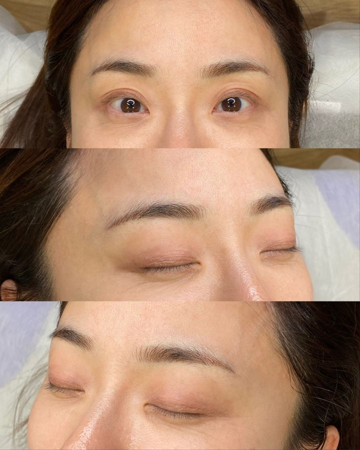
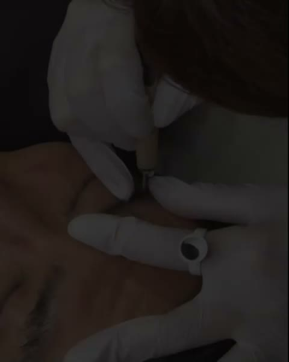
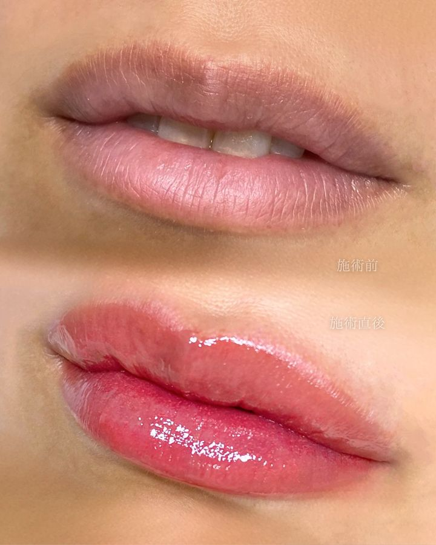
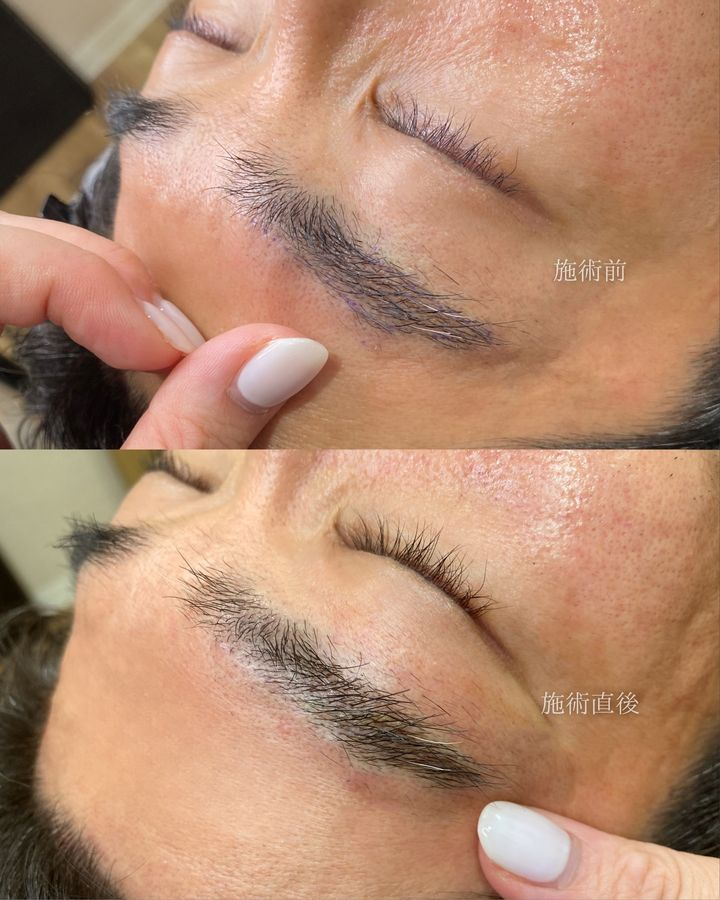
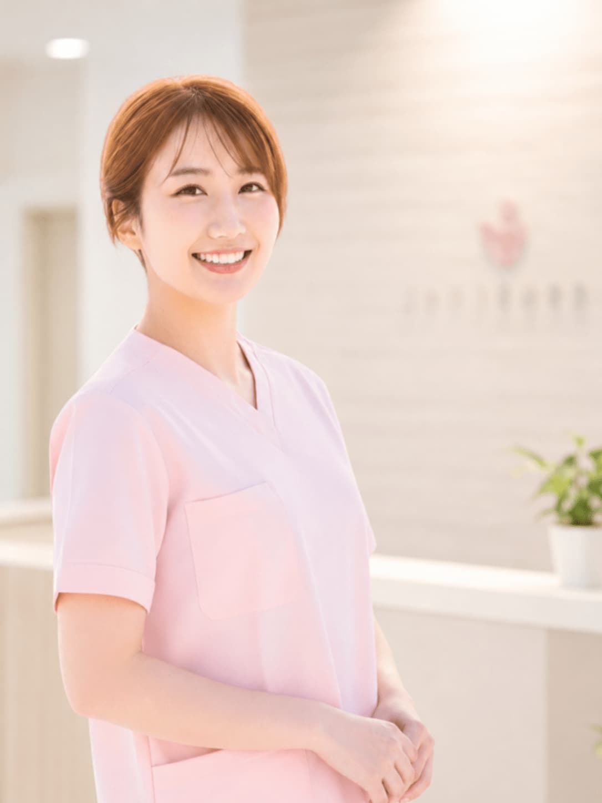

パウダー眉
自眉を活かしてふんわり
※東京以外の提携院（B-leafメディカル内科小児科クリニック・茨城県つくば市）でkomiが担当した症例です。
- 費用
- 1回 66,000円、2回セット 120,000円（税込）（技法・回数・提携院により異なります）
- 施術回数
- 通常2回程度
- リスク・副作用
- 炎症症状（赤み、腫れ、熱感、痛み、内出血）、ダウンタイム中のかゆみ、アレルギー症状、感染、にじみ
- ダウンタイム
- 1週間前後（赤み、かゆみ、皮むけなど）
- 撮影時点
- 初回施術直後のもの
Medical Artmake by komi
全国8都県・9院の提携クリニックで受けられる、大人の医療アートメイク。
看護師のアーティストが、医師管理のもとで。骨格・肌質・毎日の暮らしに合わせて、濃くしすぎない自然な仕上がりを一緒につくります。

Cases
写真はご本人の同意を得て掲載しています。施術直後の写真は色が濃く見え、仕上がりには個人差があります。

パウダー眉
※東京以外の提携院（B-leafメディカル内科小児科クリニック・茨城県つくば市）でkomiが担当した症例です。

リップ

メンズ毛並み眉
※東京以外の提携院（茨城県つくば市）でkomiが担当した症例です。
KOMI ARTMAKE（コミ アートメイク）は、看護師国家資格を持つ専任アーティストkomiが、提携医療クリニック内で医師管理のもと行う医療アートメイクです。眉・アイライン・リップ・ヘアライン・ヘアスカルプ・パラメディカルに対応し、東京・半蔵門（一番町まつりかクリニック）のほか、茨城・つくば、群馬・太田・高崎で施術しています。施術実績は3,000件以上です。
NEXT TOKYO SESSION
日程はLINEよりお問い合わせください
※ 上記以外でも日程調整が可能な場合があります。ご連絡のタイミングにより、前後のご予約の関係で既に埋まっている場合もありますので、LINEでご確認ください。
痛みには個人差があります。表面麻酔と追加麻酔で対応します。
大事なご予定前は時期の目安も事前にご案内します。
CONCEPT
銀座等・大手クリニック在籍
施術実績
看護師国家資格 ／ 医師管理のもと施術
全国提携クリニック
はじめから終わりまで
komiが一貫して担当
カウンセリングから施術後の相談まで、komiが担当します。
あなただけの
世界にひとつのデザイン
骨格、肌色、ライフスタイル、「なりたい自分」に合わせて、唯一の眉・リップを描きます。
毎朝の眉メイクに
時間がかかる
汗や涙でメイクが
落ちてしまう
左右の眉が
うまく描けない
すっぴんに
自信が持てない
医療クリニック内での
安全な施術を希望
傷跡・白斑など
医療補助施術を希望

Artist
一人ひとりの骨格・肌色・ライフスタイルに
寄り添った施術を。
銀座等の大手クリニックで6年間・3,000件以上の施術を経験し独立。私自身もかつて眉メイクに悩みアートメイクを受けた一人で、その体験を今の施術に活かしています。東京・横浜・群馬・香川・長野・福岡の提携クリニックで対応中。
プロフィールを見る透明性と安心を大切に
同一担当（指名料なし）
初回から最後まで、専任のkomiが一貫して担当します。
プライバシーへの配慮
プライバシーに配慮した施術環境です。個室の種類（完全個室・半個室など）は院によって異なります。
医師管理（提携医療クリニック内）
提携医療クリニック内で、医師の管理のもと行われる合法的な医療行為です。
段階的に仕上げる（2回セット推奨）
初回で決め切らず、肌の反応を確認しながら2回セットで丁寧に仕上げます。
LINEで術後相談可
施術後のアフターケアも、LINEで一貫してサポートします。
Clinics
全国8都県・9院の提携クリニックで施術を承っています
〒102-0082 東京都千代田区一番町4-65
一番町大石ビル1階 101
半蔵門駅 徒歩3分 ／ 麹町駅 徒歩5分
完全予約制
詳細・アクセスを見る LINEで予約するMonitor
施術前後の写真をSNS（Instagram）に掲載いただける方を対象に、
モニター割引でご提供しています。
・ 施術前後の写真（顔出しなし可）をkomi公式Instagramへ掲載することに同意いただける方
・ 割引率はメニューにより異なります。LINEにてご確認ください
・ カウンセリング時にモニターご希望の旨をお申し出ください
・ 掲載時のテキスト内容は施術後にご相談します
FAQ
施術前に気になること、遠慮なくご確認ください
施術前に表面麻酔クリームをしっかり塗布するため、ほとんどの方が「思ったより痛くなかった」とおっしゃいます。ただし痛みの感じ方には個人差があります。施術中に痛みを感じた場合は追加麻酔で対応しますのでご安心ください。我慢は不要です。
【眉】施術直後〜翌日に軽度の赤みが出る場合があります。多くの方は翌日には日常生活に支障ない状態になります。
【アイライン】施術直後から翌日にかけて若干の腫れや赤みが出ることがあります。
【リップ】腫れやすい部位のため、施術直後〜翌日が最も腫れを感じやすいです。2〜3日で落ち着く方がほとんどです。いずれも個人差があります。
大切なご予定の最低2週間前、余裕を持って1ヶ月前を推奨します。施術直後は色が濃く見え、赤み・腫れが出る場合があります。1週間程度でかさぶたが剥がれ、2〜3週間で自然な色調に落ち着いてきます。ご予定を事前にお伝えいただければ時期についてもご案内します。
眉・アイラインの場合、多くの方は翌日から日常の仕事に戻っていただいています。大切なプレゼンや人前に立つお仕事がある場合は数日の余裕をお勧めします。リップは腫れが出やすいため、余裕を持っていただくのがベターです。
【メイク】施術部位は約1週間お控えください。それ以外の部位は当日から可能です。
【洗顔】施術部位を強くこするのはお控えください。
【運動・サウナ・長湯】施術後1週間は、発汗・血行促進を伴う行為はお控えください。色の定着に影響します。
以下に該当する方は施術をお断りする場合があります。
・妊娠中・授乳中の方 ・ケロイド体質の方 ・金属アレルギーをお持ちの方 ・抗凝固薬・抗血小板薬を服用中の方 ・免疫抑制剤を服用中の方 ・施術部位に皮膚疾患がある方（アトピー・湿疹等）
ご不安な方はまずLINEにてご相談ください。
アートメイクを受けたことは、MRI検査の前に必ず検査施設・担当医へお伝えください。検査を受けられるかどうかは、担当医と検査施設が判断します。
可能なケースが多いです。残っている色素の濃さ・色味・形によって対応が異なります。まずは現在の状態をLINEの写真でお送りください。拝見した上でご案内します。
はい。男性の施術経験も豊富です。骨格・毛流れ・職業・普段の雰囲気を確認した上で、「メイクしているとわからない」自然な仕上がりを大切にしています。
髪の毛の色・毛量・お顔のバランスに合わせて段階的に調整します。初回から一気に濃くするのではなく、定着を見ながら2回セットで仕上げるため、自然な印象のまま密度感を補うことができます。
個人差はありますが、1〜2年程度で徐々に薄くなってきます。代謝や生活環境によっても変わります。薄くなってきたと感じたタイミングで補色（リタッチ）をすることで、きれいな状態を長く保てます。
通常2回セット（初回施術＋補色）が基本です。初回から4〜8週後に補色を行い、色の定着を確認して仕上げます。
東京（一番町まつりかクリニック）での施術は月に数日の完全予約制です。最新のスケジュールはLINE公式よりお問い合わせください。人気の日程は早めに埋まりますので、お早めのご予約をおすすめします。
代表的な記事を選びました。ほかの記事はテーマ別にご覧いただけます。
テーマから探す
※ Instagramのトップページにあるリンクからも、直通LINEへご連絡いただけます。
はじめてご検討の方へ
Contact
あなたに最適なデザインを、一緒に見つけましょう。
LINEまたはInstagram DMよりお気軽にどうぞ。